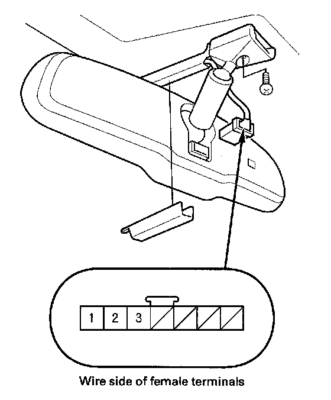

Automatic Dimming Inside Mirror Test/Replacement
Automatic Dimming Inside Mirror Test/ReplacementTest/Replacement
Canada models
1. Remove the roof console.

2. Turn the ignition switch ON (II).
3. Measure the voltage between No. 2 terminal and body ground.
- If there is less than 0.5 V, go to step 4.
- If there is more than 0.5 V, check for:
- An open in the wire.
- Poor ground (G 601).
4. Measure the voltage between No. 1 terminal and body ground.
- If there is battery voltage, go to step 5.
- If there is no voltage, check for:
- Blown No. 21 (7.5 A) fuse in the under-dash fuse/relay box.
- An open in the wire.
5. Measure the voltage between No. 3 terminal and body ground with the transmission range switch in R position.
- If there is battery voltage, replace the mirror assembly.
- If there is no voltage, check for:
- An open in the wire.
- Faulty under-dash fuse/relay box.
- Faulty transmission range switch.